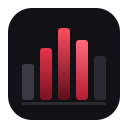
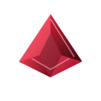
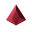
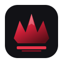
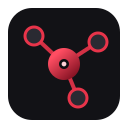
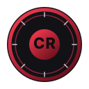

F1
Void Gate
Lettermark subtil : le C n’existe que comme découpe dans la masse crimson.
Icon · dark
Sur fond clair
Six pistes vraiment nouvelles, hors Geometric C (A0–A6) et hors E1–E6. Negative-space, equalizer, origami, crest, hub nodes, sceau circulaire.
F1–F6 · more-dirs| ID | Nom | Pitch |
|---|---|---|
| F1 | Void Gate | C en négatif dans une tuile pleine — lettre = vide, pas un gros C gradient |
| F2 | Spectrum Bars | Barres equalizer / waveform — énergie créateurs |
| F3 | Fold Origami | Plans pliés + plis durs — origami abstrait (≠ flamme ruban) |
| F4 | Apex Crest | Crest gaming minimal 3 pics + socle — pas de couronne clipart |
| F5 | Node Hub | Noyau + 3 satellites — hub / plugins / connecteurs |
| F6 | Press Seal | Sceau / coin circulaire — anneau + CR central |
Lettermark subtil : le C n’existe que comme découpe dans la masse crimson.
Equalizer crimson — stream / audio / creators, sans grille dock.

Forme pliée géométrique — plis durs et faces, distincte de Ribbon Flame.


Crest gaming épuré : trois pics + plinthe — identité compétitive sans ornement.

Réseau 1+3 nœuds — métaphore hub StreamDock / plugins connectés.

Sceau / coin circulaire — marque « pressée », anneau + monogramme CR.

F5 Node Hub raconte le mieux le produit (hub / plugins). F1 Void Gate offre un lettermark mémorable et distinct des C géométriques A. À trancher selon priorité produit vs identité typographique.